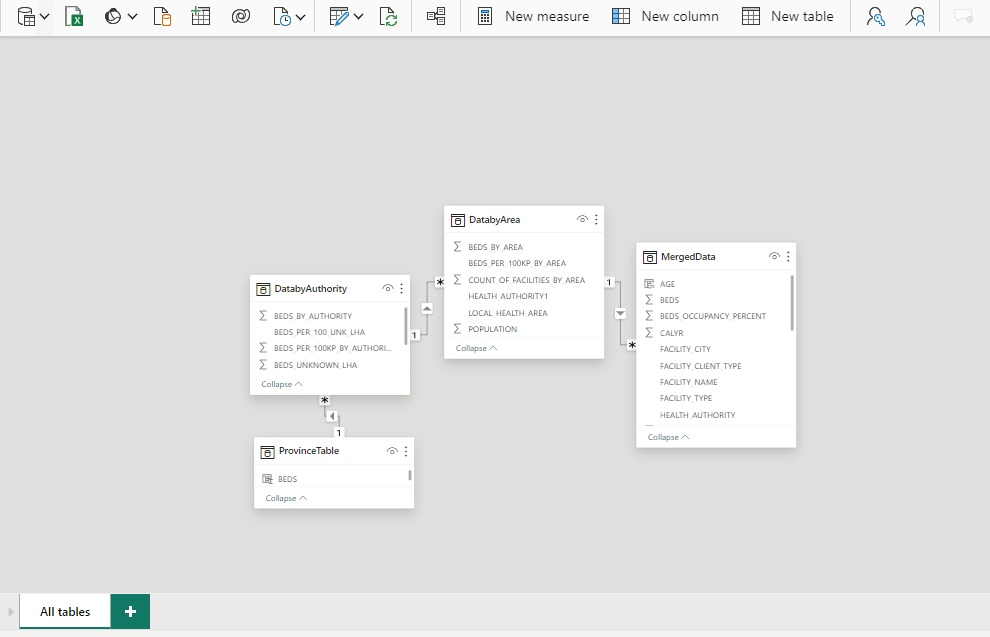

Mental Health Project - BC
The Scope of this project focused on optimizing mental health resource allocation by conducting a comprehensive assessment of existing facilities. Our objectives included identifying high-demand areas, optimizing bed allocation strategies, fostering collaboration with stakeholders, and utilizing data-driven approaches for evidence-based decision-making. This initiative aimed to enhance the efficiency and accessibility of mental health services, contributing to improved patient outcomes and overall community well-being.
Distribution of beds, population, and the number of facilities in British Columbia.
{kind=link}
Data Sources
The foundation of this project lies in data extracted from a healthcare database, structured across two primary tables. These tables contained essential information regarding the capacity, occupancy rates, and geographic distribution of mental health facilities. To provide a visual representation of the complex relationships within the dataset, a comprehensive data model was established, depicted in the accompanying picture. The data model showcases four tables, illustrating the adjustments made during the project and capturing the initial state of the data. As a critical step, the calculation of the bed-to-population ratio was undertaken. This metric proved indispensable in identifying areas with higher demand, where occupancy levels had reached critical thresholds. The data model, coupled with calculated ratios, played a pivotal role in formulating targeted strategies for the optimal allocation of mental health resources.
Methodology and Analysis
For this project, I turned to the versatile R programming language to perform the data transformations. The initial data preprocessing involved variable splitting and establishing relationships to facilitate meaningful comparisons. Similarly, a meticulous analysis of unknown values was conducted separately, particularly focusing on beds without corresponding population data.
Summarized tables were created to support detailed analysis, accompanied by additional calculations to determine populations in intermediate tables. The R script, central to these transformations, played a key role in enhancing the dataset's utility
For comprehensive analysis, I crafted a variety of charts to pinpoint areas calling out for attention in mental health facility access. The first page focused on a general analysis of areas and regions, exploring the relationship between beds and population. Horizontal bar charts facilitated comparisons, considering both null and non-null values. Pie charts visually represented facility distribution in each area.
I didn't stop there! Introducing tables strategically placed like helpful guides, ready to assist in filtering data based on specific values and locations. User-friendly cards were our way of displaying the status of chosen criteria, ensuring you have all the information at your fingertips. Turning the page revealed a closer look at beds by facility, accompanied by a charming bubble map. The bubbles, like friends at a gathering, varied in size, showing the number of beds and helping us visualize areas with more facilities and beds.
As we continue through pages three and four, we can explored additional variables of interest.This includes, facility types, priority populations, client types, occupancy details, and the age distribution clients. These insights can guided us in crafting strategies to optimize the allocation of mental health resources.
{kind=link}
{kind=link}
{kind=link}